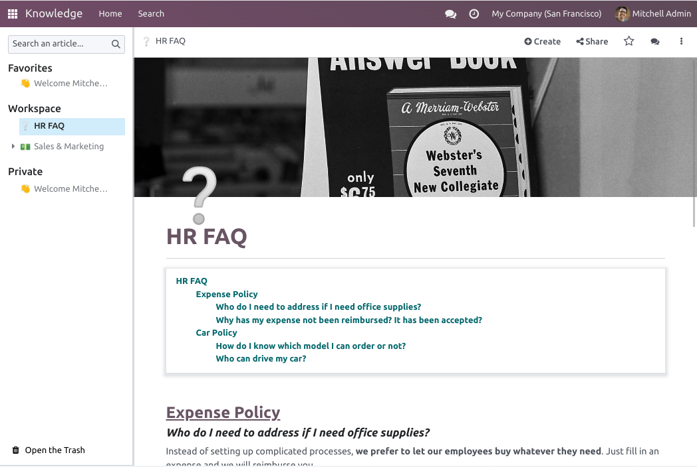

Edición de artículos¶
Agregar y darle estilo al contenido¶
Para empezar a agregar contenido, haga clic en cualquier parte de la página. Su cursor se configura de forma automática para escribir el título de primer nivel del artículo. Una vez que termine de escribir el título, presione enter en su teclado para avanzar a la siguiente línea.
Truco
Haga clic en sin título en el lado izquierdo de la barra superior para hacer coincidir de forma automática su título h1 (título de primer nivel) y el nombre del artículo. Si desea cambiar el nombre de su artículo más tarde, puede hacerlo de forma manual. Para hacerlo, haga clic en el nombre en la barra superior y modifíquelo.
Editor de texto¶
Para darle estilo al texto mediante el editor de texto, primero seleccione el texto que desea editar.
Luego, puede:
Cambiar el estilo al hacer clic en normal. Esto abre un menú desplegable con varios estilos a elegir (normal, código, título 1 → título 6, cita textual).
Dar formato al texto. Haga clic en el icono B para poner el texto en negritas, en el icono I para ponerlo en cursivas, en el icono U para subrayarlo y en el icono S para tacharlo.
Cambiar el color de la fuente al hacer clic en el icono A o el color del fondo al hacer clic en el icono de lápiz:
Para elegir a partir de un color de tema predefinido, haga clic en tema y seleccione el color deseado.
Para personalizarlo, haga clic en sólido y defina un color mediante la rueda de colores, o al escribir su código hex o sus valores RGBA.
Para usar una gradiente, haga clic en gradiente, elija un gradiente predefinido o haga clic en personalizado para crear un gradiente personalizado.
Cambiar el tamaño del texto. Haga clic en el número de tamaño y seleccione el tamaño que desea.
Haga clic en los iconos de listas para convertir el párrafo en una lista sin orden, con orden o una lista de verificación.
Haga clic en el icono de cadena para insertar o editar un enlace URL.

Para dar formato a un párrafo completo, escriba / en cualquier parte del texto. Hacer esto abre la caja de herramientas, lo que le permite:
Convertir un párrafo en listas (sin orden, con orden o de verificación).
Convertir un párrafo en un título (1 → 6), texto normal,
códigoo citas textuales.
Fotos de portada¶
Puede personalizar su artículo al agregar una foto de portada y un icono. Coloque el ratón sobre el título h1 y haga clic en agregar portada. Se abre una ventana emergente para establecer una foto de portada.
Si asoció su base de datos con su cuenta de Unsplash, la foto de portada se elige de forma automática según el nombre del artículo. Para modificarlo, coloque el ratón sobre la imagen para que aparezcan los botones, haga clic en cambiar portada y seleccione otra imagen.
Puede obtener imágenes de distintas fuentes:
Buscar en la base de datos de Unsplash.
Agregar el URL de una imagen.
Subir una imagen de su computadora.
Para eliminar la portada, coloque el ratón sobre la imagen para que aparezcan los botones y haga clic en eliminar portada.
Nota
Para vincular Unsplash a su base de datos, vaya a Unsplash.
Los artículos son responsivos, así como las fotos de portada. Como resultado, las imágenes no se pueden acomodar de forma manual para ajustarse a una pantalla en específico, ya que su tamaño cambia de forma automática según el dispositivo.
Iconos¶
Para agregar un icono, coloque el ratón sobre el título h1 y haga clic en agregar icono. Esto establece un emoji de forma aleatoria. Para cambiarlo, haga clic en él y seleccione uno de la ventana de emojis. Para eliminarlo, siga los mismos pasos y haga clic en la x en un círculo rojo.
Nota
El emoji también aparece antes del artículo correspondiente en el árbol jerárquico del panel lateral.
Haga clic en el emoji del panel lateral para cambiarlo sin tener que abrir el artículo relacionado.
Comandos¶
Para utilizar un comando, escriba / y abra la caja de herramientas. Escriba el nombre del comando o seleccione una de las varias funciones para insertar bloques, imágenes, archivos, etc. Algunos de ellos, como /Imagen o /Artículo se pueden utilizar en todas las aplicaciones, pero otros son intrínsecos de la aplicación de Información y no se pueden encontrar o utilizar en ninguna otra aplicación.
Lista de comandos¶
Los comandos se dividen en varias categorías según su uso.
Comando |
Uso |
|---|---|
Lista con viñetas |
Crear una lista con viñetas. |
Lista numerada |
Crear una lista numerada. |
Lista de verificación |
Llevar el seguimiento de tareas con una lista de verificación. |
Tabla |
Insertar una tabla. |
Separador |
Insertar un separador de línea horizontal. |
Cita textual |
Agregar una sección de bloque de cita. |
Código |
Agregar una sección de código. |
2 columnas |
Convertir en 2 columnas. |
3 columnas |
Convertir en 3 columnas. |
4 columnas |
Convertir en 4 columnas. |
Comando |
Uso |
|---|---|
Encabezado 1 |
Encabezado grande |
Encabezado 2 |
Encabezado mediano. |
Encabezado 3 |
Encabezado pequeño. |
Cambiar dirección |
Cambiar la dirección del texto. |
Texto |
Bloque de párrafo. |
Comando |
Uso |
|---|---|
Imagen |
Insertar una imagen. |
Artículo |
Vincular un artículo. |
Comando |
Uso |
|---|---|
Enlace |
Agregar un enlace. |
Botón |
Agregar un botón. |
Cita |
Agregar una cita específica. |
Calendario |
Programar una cita. |
Comando |
Uso |
|---|---|
3 estrellas |
Insertar una calificación con 3 estrellas. |
5 estrellas |
Insertar una calificación con 5 estrellas. |
Comando |
Uso |
|---|---|
Contenido |
Agregar un índice con los encabezados de los artículos. |
Índice |
Mostrar el primer nivel de artículos anidados. |
Esquema |
Mostrar todos los artículos anidados. |
Kanban de artículos |
Insertar una vista de kanban de elementos de artículo. |
Lista de artículos |
Insertar una vista de lista de elementos de artículo. |
Archivo |
Insertar un archivo descargable. |
Plantilla |
Agregar una sección de plantilla que se puede insertar en mensajes, términos y condiciones o descripciones en otras aplicaciones. |
Comando |
Uso |
|---|---|
Firma |
Insertar su firma. |
Contenido de otras aplicaciones¶
La aplicación Información le permite obtener vistas de contenido de otras aplicaciones. Para hacerlo, acceda a su aplicación objetivo y cree la vista deseada. Luego, haga clic en y seleccione uno. La vista se inserta al final de la página del artículo seleccionado.
Example
Para obtener la siguiente vista, la creamos en y la insertamos al hacer clic en y seleccionamos el artículo Manual de ventas.

Importante
Los usuarios que no tienen acceso a la vista no podrán acceder a ella en Información, aunque tengan acceso al artículo que incluye la vista.